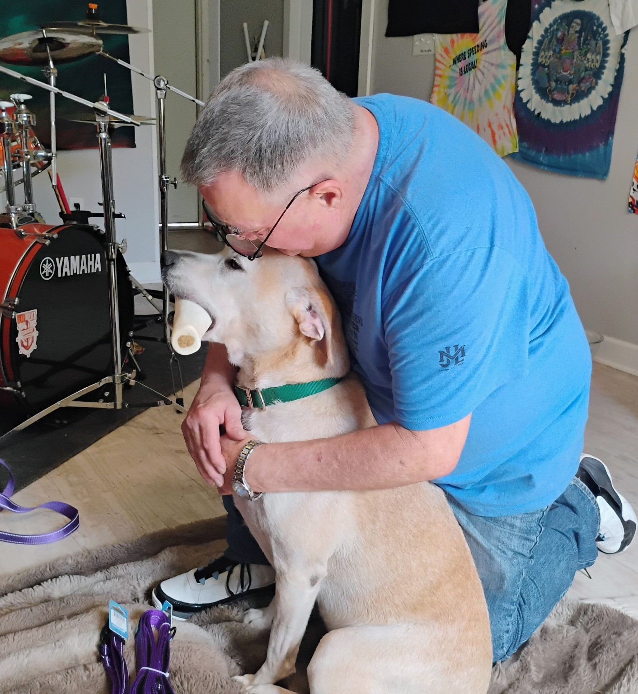

Bullwinkle returned home after a temporary separation. His story reminds us why we do this: healing, stability, and the chance to be together again.
Meet Our Pups →Compassionate, temporary pet care that helps people through life's hardest moments and keeps families together.
— THE HUMAN SIDE OF THE LEASH —
Every reunion is a family bond preserved.

Bullwinkle returned home after a temporary separation. His story reminds us why we do this: healing, stability, and the chance to be together again.
Meet Our Pups →